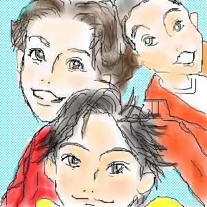

 |
October.2002
MTKクラシックで始めて見たこの曲。
あまりの山ちゃんの声の違いにビックリしました。
好きだったウエンツ瑛士君も福ちゃんも居てかなり好きなグループになりました。
羊狸さんのHPに描かせて頂いたのですが、かなり時間がかかってしまいました。
ウエンツと福ちゃんは初めてだったのですごく難しかったです。
毎回最初にその人を描く時はすごく緊張します。
でも、ウエンツに時間をかけ過ぎた為、福ちゃんはサラッと一度しか描いていません。ごめんよ福ちゃん。
山ちゃんは幼さが出せなくて苦労しました〜…。
自分では反省点多すぎる絵でしたが、羊狸さんのHPに飾って頂いてます！
ありがとうございます〜！